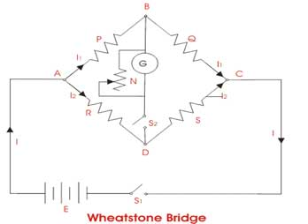

Wheatstone bridge circuit is very useful in solving many problems related to electrical and electronics measurement. It was first developed by Samuel Christie and later it was designed by Sir Wheatstone in the year of 1843. Wheatstone bridge circuit is an important concept in studying electrical and electronics measurement. Wheatstone bridge is the fundamental bridge whose concept is used in making other bridges. These bridges have four arms with different elements like resistances, inductance or capacitance. Wheatstone bridge measures an unknown resistance in one arm with balancing the resistances on the opposite arms. An equation is used for bridge equation which helps in finding out the unknown element value.

The general arrangement of Wheatstone bridge circuit is shown in the figure below. It is a four arms bridge circuit where arm AB, BC, CD and AD are consisting of resistances P, Q, S and R respectively. We come to know about Wheatstone bridge circuits while studying electronics circuits.. Wheatstone bridge has four arms consisting of resistances, inductances or even capacitance. Generally this bridge measures the unknown electrical resistance by balancing the other arms. A basic Wheatstone bridge consists of a voltage source and also a galvanometer. Kirchhoff’s circuit laws are used in solving the unknown resistance value. It can measure capacitance, inductance, impedance and other quantities. Wheatstone bridge can also measures even small value of resistance change in strain gauge. We will discuss here regarding the applications of this bridge. Wheatstone bridge is a special circuit which has a lot of applications on different electrical and electronic measurement phenomenon.
 by
by